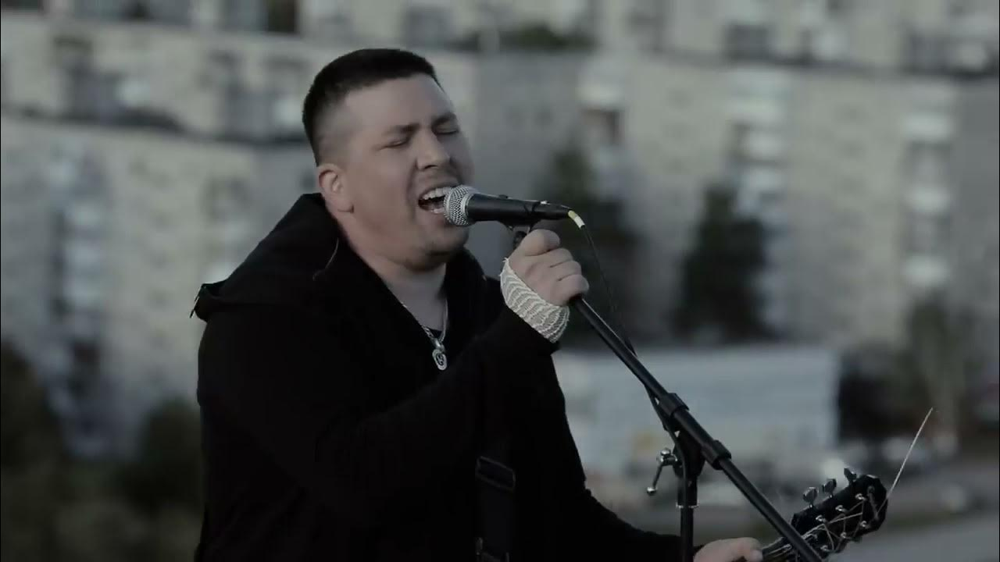
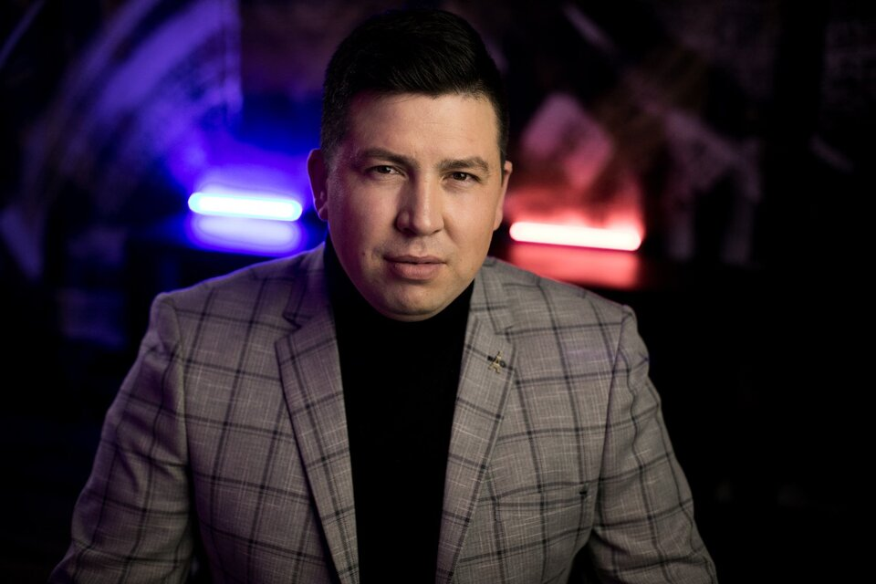

Автор · Исполнитель
Эдуард
Хуснутдинов
Песни о жизни.
Музыка, которая отзывается в душе.

Официальный сайтАфиша / 2026
Увидимся на концерте
Ближайшие концерты
Саратов
Купить билетыВладимир
Купить билетыМосква
Купить билетыТула
Купить билетыПермь
Купить билетыУфа
Купить билетыБилеты доступны на Ticketscloud. Время начала и адрес площадки — на странице концерта.
Эдуард Хуснутдинов

Музыкант.
Автор.
Исполнитель.
Эдуард Хуснутдинов — музыкант, исполняющий песни в жанре «шансон».
Многогранный и неповторимый автор-исполнитель лирических песен, наполненных смыслом и задевающих самые тонкие струны души любого слушателя.
Всегда рядом